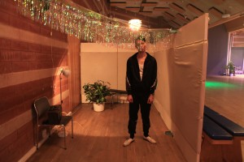

Workshop i relasjonelt teater med Poste Restante (SE) - 2 dager
- Kategori:
- Kurs med åpning for andre
Kurs med åpning for andre
Åpent for profesjonelle skuespillere. En viss åpning for andre utøvende kunstnere med relevant erfaring. Andre kunstnere må sende CV. - Dato:
- 07.10.2015 til 08.10.2015
- Start kl :
- 11:00
- Slutt kl :
- 16:00
- Pris:
- 500,-
- Adresse:
- Norsk Skuespillersenter, Welhavensgate 1, Oslo

{kind=link}
Over to dager arbeider vi med estetiske metoder for performere i konseptuell scenekunst, på scenen så vel som i stedsspesifikke performanceverk.
Hva innebærer det for performernes arbeide når grensen mellom scene og sal, mellom publikum og kunstverk forskyves?
Vi deler praksis og tilnærming til verk hvor narrativ skapes og oppstår i dialog med usikre momenter, som for eksempel publikumsinteraksjon eller regelverk. Hvordan genererer vi gjennom performerens arbeide produktive og utfordrende rom, situasjoner og tilstedeværelse? Gjennom hvilke prosedyrer skapes integritet for kunstverket og utøverne i situasjoner der handlingen tilskrives publikum eller andre uforutsigbare faktorer?
Påmelding via vår påmeldingsside, her: http://www.skuespillersenter.no/pamelding/
POSTE RESTANTE
Fra hjemmesiden deres: "Poste Restante is the artistic collaboration between Erik Berg, Linn Hilda Lamberg and Stefan Åkesson. Since 2007 Poste Restante has produced numerous large scale performances and has been presented at festivals such as Baltic Circle (FI), Santiago a Mil (CL) and Salzburger Festspiele (AT).
In Poste Restante’s work the individual visitor holds the position of being the centre, the main character and final reciever. There are no fictious backstories, no on and off stage. Poste Restante’s interests rest within the actual and the parameters of the situation at hand. The performances come in the form of unexpected but honest running activites, where the visitor is placed at the heart of an ongoing dilemma. Rather than finding solutions to these conflicts, their work legitimizes all issues and acts as a catalyst for deep reflection on difficult questions and scenarios. Information is always clear and the participation concrete. Met with respect for her specific conditions and challenges, each visitor is offered an opportunity to think complicated thoughts all way through as well as courage to take their emotions seriously."
Creative Time i New York beskrev dem slik: "Whether it be in abandoned offices, church aisles, shady backstreets, or embassy villas, Poste Restante’s performances are sure to occur in unexpected places. The Swedish company creates performances where audiences are placed at the heart of an ongoing dilemma." Se hele artikkelen her.
Mer om Poste Restante:
- Gruppas hjemmeside: www.poste-restante.se
- "Bäst just nu", Nöjesguiden: http://ng.se/artiklar/bast-just-nu-scen-september-2015-stockholm
- Om den nydelige 2010-produksjonen Chopins Hjärta, Polska Institutet i Stockholm: http://www.polskainstitutet.se/chopins_hjarta_poste_restante
Pris for medlemmer av NSF: 450,-